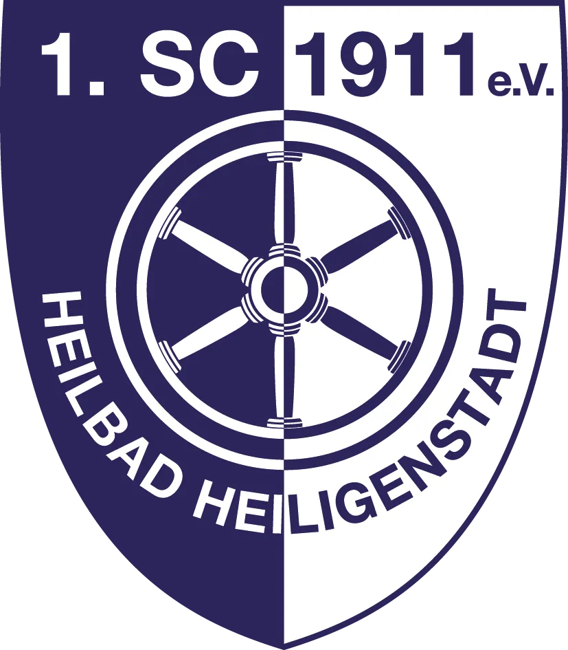
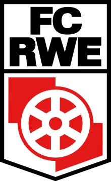
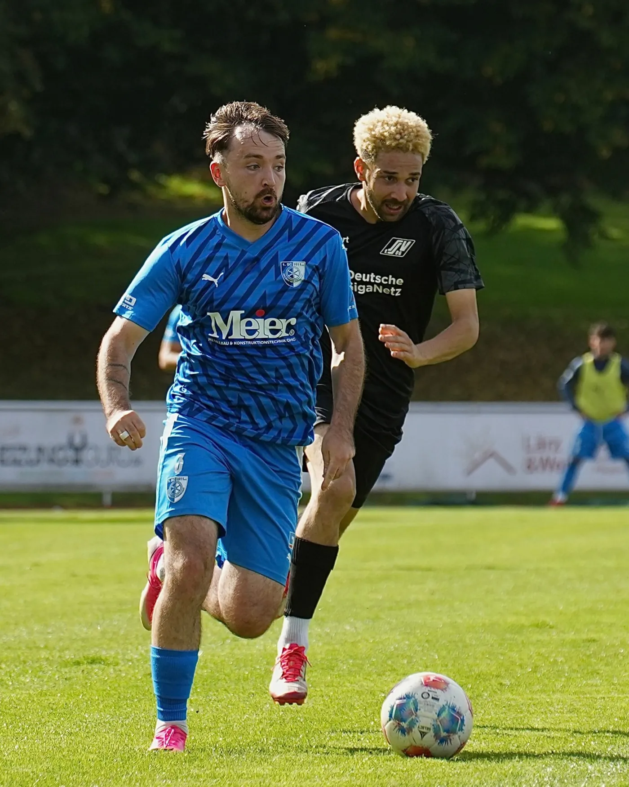
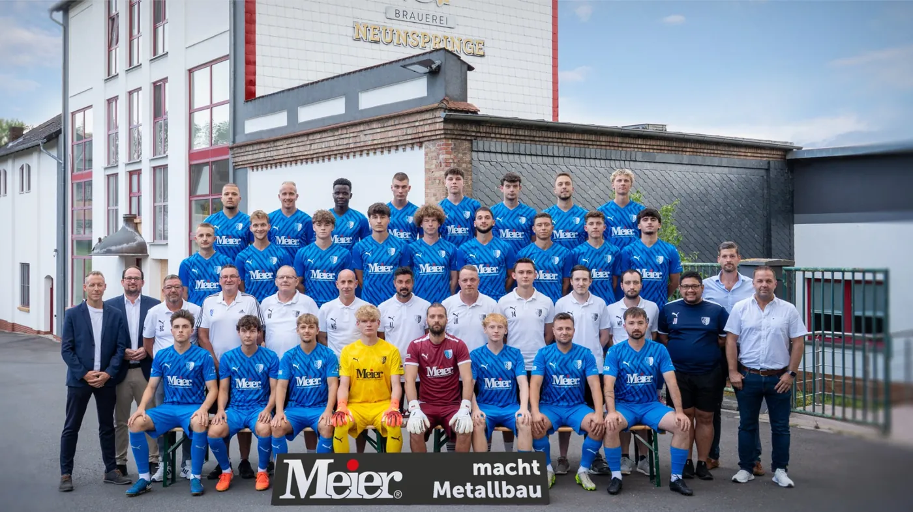
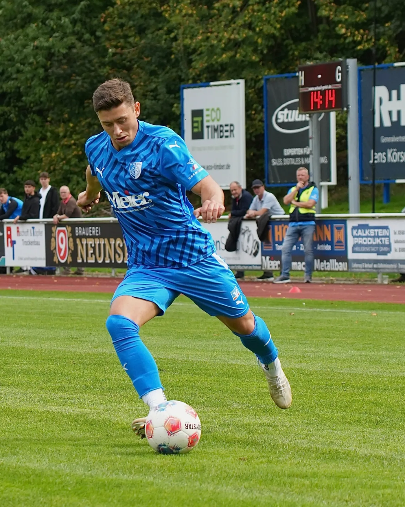
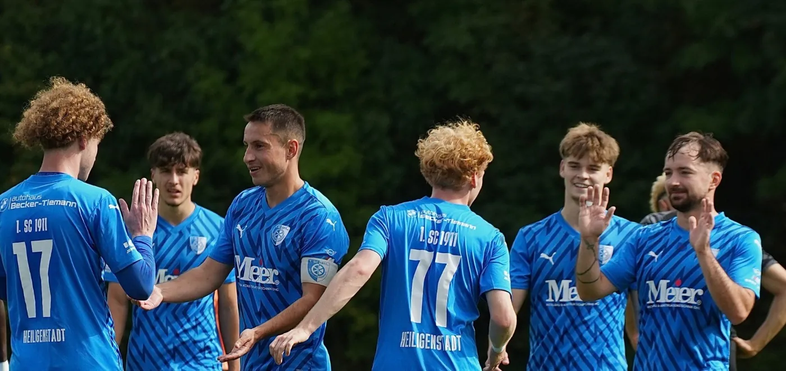

DAS DIGITALE STADIONHEFT
Gesundbrunnenstadion · 04. Oktober 2026
Pokal im
Gesundbrunnen

1. SC 1911 Heiligenstadt
FC Rot-Weiß Erfurt

Sonntag, 4. Oktober · 14:00 UhrHeilbad Heiligenstadt · Einlass ab 12:30 Uhr

Zum Pokalspiel
Herzlich
willkommen
1. SC 1911 Heiligenstadt
Gesundbrunnenstadion
04. Oktober 2026
Liebe SCH-Fans, liebe Gäste aus Erfurt,
wir freuen uns, euch heute zu einem besonderen Heimspiel begrüßen zu dürfen. Mit dem FC Rot-Weiß Erfurt kommt der Tabellenführer der Regionalliga Nordost nach Heiligenstadt. Wir begrüßen die Mannschaft und das Trainerteam unserer Gäste, ihre Fans und das Schiedsrichterteam.
Für unseren SCH ist dieses Achtelfinale eine große sportliche Aufgabe. Die Siege in Siebleben und Gotha haben uns zurück in den Gesundbrunnen geführt. Jetzt trifft unsere Mannschaft vor den eigenen Zuschauern auf einen zwei Klassen höher spielenden Gegner.
Die vergangenen Wochen geben Anlass, mit Zuversicht auf diese Begegnung zu schauen. Gegen Suhl und in Geratal blieb unsere Mannschaft ohne Gegentor und holte sechs Punkte. Unter Alexander Ludwig wächst die Stabilität. Heute wird es darauf ankommen, gemeinsam zu verteidigen und die eigenen Möglichkeiten entschlossen zu nutzen.
Ein solcher Spieltag gelingt nur, weil viele Menschen mithelfen. Dafür danken wir unseren Ehrenamtlichen, den Helferinnen und Helfern rund um das Stadion und unseren Partnern.
Unterstützt unsere Jungs auch dann, wenn eine Aktion nicht gelingt. Wir wünschen euch ein spannendes, faires Pokalspiel und eine gute Zeit bei uns im Gesundbrunnen.
Viel Freude mit unserem digitalen Stadionheft.
Unser Gast
FC Rot-Weiß Erfurt
Regionalliga Nordost
Der Tabellenführer zu Gast
Erfurt reist als ungeschlagener Tabellenführer der Regionalliga Nordost an. Die Mannschaft von Fabian Gerber hat acht ihrer ersten elf Ligaspiele gewonnen und dreimal unentschieden gespielt.
Quellen: RWE / DFB · Stand: 03.10.2026
Das 4:3 in Leipzig
Beim jüngsten Ligaspiel gegen Lok Leipzig lag Erfurt bereits mit 1:3 zurück. Doch die Mannschaft von Fabian Gerber drehte die Partie und gewann noch mit 4:3. Dustin Forkel erzielte in der Nachspielzeit den entscheidenden Treffer und versetzte die rot-weiße Fangemeinde in Feierlaune.
Erfurt geht als klarer Favorit in dieses Achtelfinale. Unser SCH will dem Regionalligisten das Weiterkommen aber so schwer wie möglich machen. Mit einer geschlossenen Mannschaftsleistung und der Unterstützung im Gesundbrunnen wollen wir unsere Chance auf eine Pokalüberraschung suchen.
Alexander Ludwig im Kurzinterview
Mutig ins Pokalspiel
Wiedersehen mit Erfurt
Alexander Ludwig trug das Erfurter Trikot bereits im Nachwuchs. 2017 kehrte er zurück und spielte 2017/18 für RWE in der 3. Liga. Später trainierte er die U19. Heute empfängt er seinen früheren Verein als Trainer unseres SCH.
Alex, was macht dieses Pokalspiel für uns besonders?
Wir sind nicht der Favorit und können ganz ohne Druck Fußball spielen. Für unsere Jungs ist es eine schöne Gelegenheit, sich mit einem starken Gegner zu messen. Wir wollen die Aufgabe mit Freude angehen und zeigen, was wir als Mannschaft können. Dazu gehört auch, dass wir uns etwas zutrauen und unsere Möglichkeiten suchen.
Worauf kommt es gegen Erfurt an?
Es kommt darauf an, dass wir als Team unser Tor verteidigen. Jeder muss bereit sein, für den anderen mitzuarbeiten und ihn zu unterstützen. Gegen einen solchen Gegner brauchen wir viel Aufmerksamkeit und müssen als Mannschaft zusammenbleiben. Wenn wir den Ball haben, wollen wir versuchen, mutig nach vorn zu spielen. Wir werden auch Phasen haben, in denen wir uns entlasten können. Diese Möglichkeiten müssen wir nutzen und dürfen den Ball nicht zu schnell wieder hergeben.
Was wünschst du dir von unseren Zuschauern?
Ich wünsche mir, dass sie die Jungs unterstützen – auch dann, wenn eine Aktion mal nicht klappt. Wir wollen mutig spielen, und dabei werden uns auch Fehler passieren. Gerade in solchen Momenten hilft es der Mannschaft, wenn sie merkt, dass die Zuschauer hinter ihr stehen. Diese Unterstützung kann den Jungs das Vertrauen geben, es bei der nächsten Aktion wieder zu versuchen.
Interview auf der Vereinswebsite ↗
SCH und RWE
Die bisherigen Duelle
Vier Pokalspiele seit 2007 gingen an Erfurt. Besonders eng wurde es 2012: Sebastian Möhlhenrich verkürzte spät auf 1:2, ehe ein Eigentor die Entscheidung brachte.
| Datum | Runde | SCH : RWE |
| 03.03.2007 | Viertelfinale | 0:4 |
| 08.09.2012 | 2. Runde | 1:3 |
| 09.08.2019 | 1. Runde | 0:5 |
| 05.09.2021 | 2. Runde | 0:5 |
Das jüngste Testspiel · 17.01.2026
SCH – RWE
Im ersten Testspiel der Wintervorbereitung lag der SCH zur Pause 0:4 zurück. Danach trafen Adrian Wilhelm per Elfmeter und Keliano Tavares mit einer direkt verwandelten Ecke zum 2:4.
Saison 2026/27
Unsere Mannschaft

Der SCH-Kader
Tor
- 31Bennet Fröhlich
- 46Aleksandar Stankovic
Abwehr
- 04Pascal Köhler
- 05Dioum Abdoul Aziz
- 07Jannik Jeschke
- 08Leon Göbel
- 09Maximilian Lerch
- 15Nico Berger
- 33Artur Voilenko
Mittelfeld
- 06Alexander Aschoff
- 10Ole Hoch
- 11Lucas Roth
- 14Jonas Grimm
- 19Vincent Michalek
- 20Paul Opfermann
- 21Fabio Dornieden
- 23Fabian Schnellhardt
- 24Robin Vogt
- 39Elias Gorges
- 77Martin Fiedler
Angriff
- 03Maciej Wolanski
- 16Leon Gümpel
- 17Adrian Wilhelm
- 99Jagar Jargees Ali
Der Erfurter Kader
Tor
- 01Lorenz Otto
- 20Jaden Rodtnick
- 39Emmanuel Mensah
Abwehr
- 04Sofiane Ikene
- 06Maxime Awoudja
- 16Pablo Santana-Soares
- 19Nathan Claxton
- 22Niclas Walther
- 25Dominik Becker
- 28Luca Kerkemeyer
- 29Laurenz Dehl
- 37Jean-Philippe Njike-Nana
- 38Ayooluwa Adesida
- 77Artur Andreichyk
Mittelfeld
- 03Til Schwarz
- 07Raphael Assibey-Mensah
- 08Benjika Caciel
- 10Marco Wolf
- 11Stanislav Fehler
- 13Berk Inaler
- 17Dustin Forkel
- 18Robbie Felßberg
- 21Boipelo Mashigo
- 23Phillip Aboagye
- 27Benny Boboy
- 34Hinata Gonda
- 55Lucas Falcao
Angriff
- 09Romarjo Hajrulla
- 14Benjamin Dreca
- 47Mechak Quiala-Tito
Saisonkader · keine Spieltagsaufstellung · Positionen nach FuPa, nach Rückennummern sortiert.
Unser Weg ins Achtelfinale
Die letzten Ergebnisse

Pokal · 1. Runde
Siebleben – SCH
21.08.2026
2:5
Pokal · 2. Runde
Gotha – SCH
05.09.2026
0:4
Verbandsliga
SCH – Suhl
19.09.2026
4:0
Verbandsliga
Geratal – SCH
26.09.2026
0:1
Anreise und Einlass
Euer Weg zum Pokalspiel
12:30
Uhr
Einlass und Tageskasse öffnen
Zufahrt und Sperrung
Der Leineberg ist zwischen Nordhäuser Straße und Schlachthofstraße gesperrt. Die Zufahrt zum Stadion erfolgt aus Richtung Liethen.
Parken am Stadion
Die Stellplätze am Stadiongebäude und am Kunstrasen sind nur mit gültigem SCH-Parkausweis nutzbar. Rettungswege und die rechte Seite der Schlachthofstraße in Richtung Stadion bitte freihalten.
Für unsere Gäste aus Erfurt
Parkmöglichkeiten: REWE-Markt und VR Bank. Der Stadioneingang am Leineberg ist ausschließlich für RWE-Gästefans vorgesehen.
Weitere Parkmöglichkeiten
Zur Runden Sache, EDEKA Schneider, Vitalpark (kostenpflichtig) sowie öffentliche Stellplätze. Bitte frühzeitig anreisen; aus Heiligenstadt gern zu Fuß oder per Fahrrad.

Unterwegs mit dem SCH
Mit dem Fanbus
zum Auswärtsspiel
1. FC Eichsfeld – SCH
Voranmeldungen am Merchandising-Stand oder am Getränkepunkt am Sprecherturm.
Nächstes Heimspiel
SCH – Preußen Bad Langensalza
10.10.2026 · 14:00 Uhr
Unser Partner am Pokalspieltag
Für Ihre Gesundheit.
Ein Leben lang.
Das Heft zum Mitnehmen
Alle 13 Seiten als PDF – auch offline lesbar.
1. SC 1911 Heiligenstadt · Pokalheft vom 04.10.2026
Barlow fonts: Copyright 2017 The Barlow Project Authors (https://github.com/jpt/barlow) This Font Software is licensed under the SIL Open Font License, Version 1.1. This license is copied below, and is also available with a FAQ at: http://scripts.sil.org/OFL —————————————————————————————- SIL OPEN FONT LICENSE Version 1.1 - 26 February 2007 —————————————————————————————- PREAMBLE The goals of the Open Font License (OFL) are to stimulate worldwide development of collaborative font projects, to support the font creation efforts of academic and linguistic communities, and to provide a free and open framework in which fonts may be shared and improved in partnership with others. The OFL allows the licensed fonts to be used, studied, modified and redistributed freely as long as they are not sold by themselves. The fonts, including any derivative works, can be bundled, embedded, redistributed and/or sold with any software provided that any reserved names are not used by derivative works. The fonts and derivatives, however, cannot be released under any other type of license. The requirement for fonts to remain under this license does not apply to any document created using the fonts or their derivatives. DEFINITIONS "Font Software" refers to the set of files released by the Copyright Holder(s) under this license and clearly marked as such. This may include source files, build scripts and documentation. "Reserved Font Name" refers to any names specified as such after the copyright statement(s). "Original Version" refers to the collection of Font Software components as distributed by the Copyright Holder(s). "Modified Version" refers to any derivative made by adding to, deleting, or substituting — in part or in whole — any of the components of the Original Version, by changing formats or by porting the Font Software to a new environment. "Author" refers to any designer, engineer, programmer, technical writer or other person who contributed to the Font Software. PERMISSION & CONDITIONS Permission is hereby granted, free of charge, to any person obtaining a copy of the Font Software, to use, study, copy, merge, embed, modify, redistribute, and sell modified and unmodified copies of the Font Software, subject to the following conditions: 1) Neither the Font Software nor any of its individual components, in Original or Modified Versions, may be sold by itself. 2) Original or Modified Versions of the Font Software may be bundled, redistributed and/or sold with any software, provided that each copy contains the above copyright notice and this license. These can be included either as stand-alone text files, human-readable headers or in the appropriate machine-readable metadata fields within text or binary files as long as those fields can be easily viewed by the user. 3) No Modified Version of the Font Software may use the Reserved Font Name(s) unless explicit written permission is granted by the corresponding Copyright Holder. This restriction only applies to the primary font name as presented to the users. 4) The name(s) of the Copyright Holder(s) or the Author(s) of the Font Software shall not be used to promote, endorse or advertise any Modified Version, except to acknowledge the contribution(s) of the Copyright Holder(s) and the Author(s) or with their explicit written permission. 5) The Font Software, modified or unmodified, in part or in whole, must be distributed entirely under this license, and must not be distributed under any other license. The requirement for fonts to remain under this license does not apply to any document created using the Font Software. TERMINATION This license becomes null and void if any of the above conditions are not met. DISCLAIMER THE FONT SOFTWARE IS PROVIDED "AS IS", WITHOUT WARRANTY OF ANY KIND, EXPRESS OR IMPLIED, INCLUDING BUT NOT LIMITED TO ANY WARRANTIES OF MERCHANTABILITY, FITNESS FOR A PARTICULAR PURPOSE AND NONINFRINGEMENT OF COPYRIGHT, PATENT, TRADEMARK, OR OTHER RIGHT. IN NO EVENT SHALL THE COPYRIGHT HOLDER BE LIABLE FOR ANY CLAIM, DAMAGES OR OTHER LIABILITY, INCLUDING ANY GENERAL, SPECIAL, INDIRECT, INCIDENTAL, OR CONSEQUENTIAL DAMAGES, WHETHER IN AN ACTION OF CONTRACT, TORT OR OTHERWISE, ARISING FROM, OUT OF THE USE OR INABILITY TO USE THE FONT SOFTWARE OR FROM OTHER DEALINGS IN THE FONT SOFTWARE.
Quelle: www.sc1911-heiligenstadt.de · Stand 06.10.2026